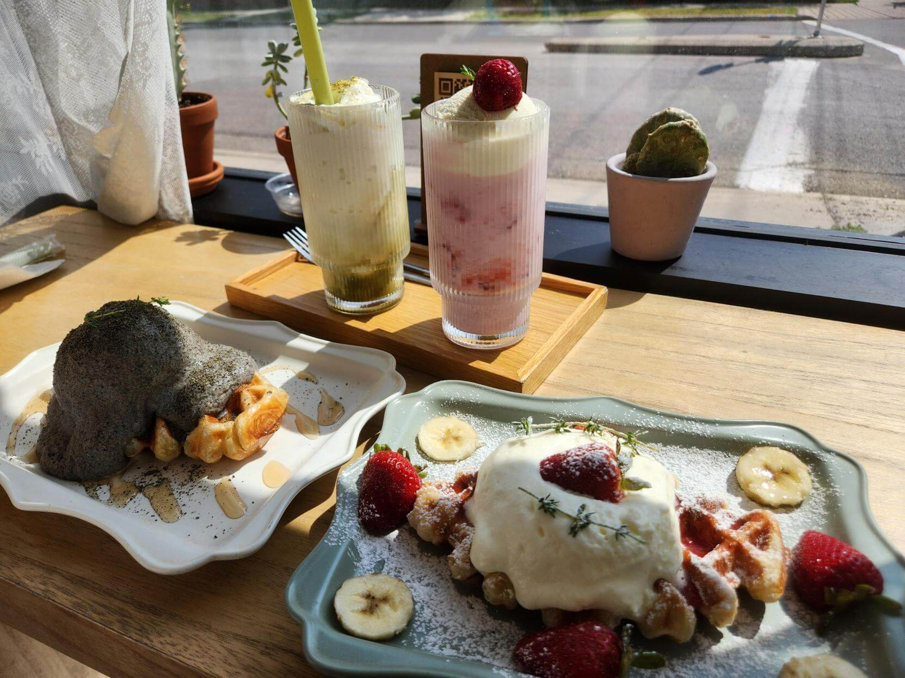
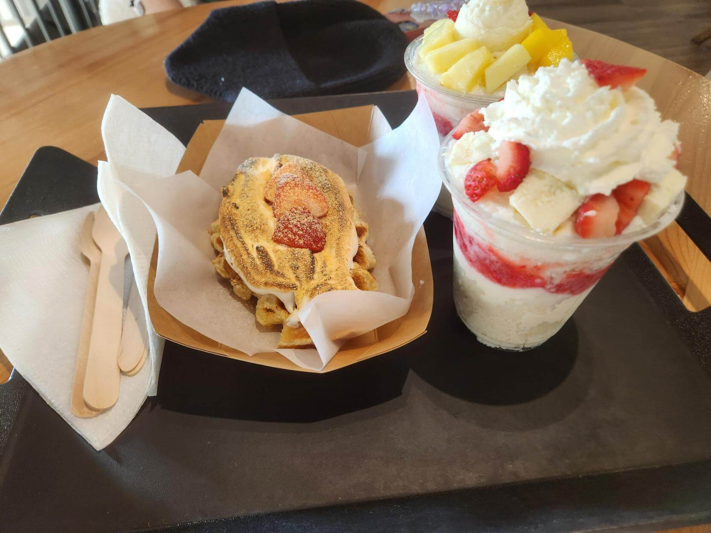

<!DOCTYPE html>
<html lang="en">

</html>

<head>
    <title>Travelogue</title>
    <link rel="stylesheet" href="style.css">
</head>

<header>
<body>
    <section class="header">
    <h1>Cafes Around Calgary</h1>
</section>
</body>
</header>

<main>
    <section class="cafe-1">
        <h2>Andsome Cafe</h2>
        <div class="container"><p class="paragraph">A korean cafe found at 7th Ave in the Northwest. Specializes in food, dessert and drinks, such as croffles, bagels, pasta, etc. Some of the drinks consist of coffee, latte, sparkling ade and non-coffee alternatives. When you enter the cafe they also provide flower services, where you can purchase flower bouquets. It is also famous for being a study place for students as it is mostly peaceful and not as chatty as other places. Andsome is also well known for their aesthetics from the decorations to their food.</p></div>
        
        
    </section>
    <section class="cafe-2">
        <h2>Paris Baguette Bakery Cafe</h2>
        <div class="container"><p class="paragraph">A french-inspired bakery with korean roots found in Calgary at 4th street in the Southwest. They are known for their baked goods such as pastries, breads and cake! It is on the expensive side as it is freshly made, during your visit they offer to heat up any sandwiches that have gone cold. Their goal is to become the neighbourhood bakery and promote a community full of joy.</p></div>
        
    </section>
    <section class="cafe-3">
    <h2>Snowcaps</h2>
    <div class="container"><p class="paragraph">Snowcaps used to be stationed near Victoria Station. It has been opened for 3 years and 7 months and has officially closed its doors on November 19, 2024. It is another Korean cafe that specializes in desserts called 'bingsu'. Bingsu is a shaved ice dessert topped with sweet desserts such as fruits, cheesecake, whipped cream, or even charred marshmellow. They also provide drinks, croffles and savoury food like tteokbokki but Snowcaps was not known for those as their bingsu was their biggest sellers. </p></div>
    
    
</section>
</main>
<section class="footer">
    <footer>
        <p>Danice Mikhaela Biano</p>
        <p>Jan 28, 2024</p>
    </footer>
</section>